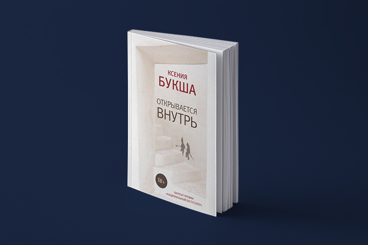
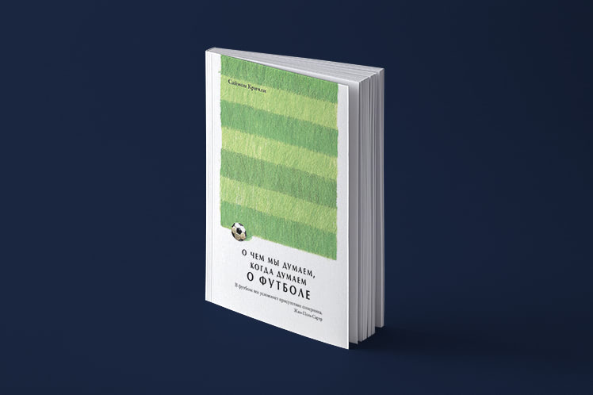
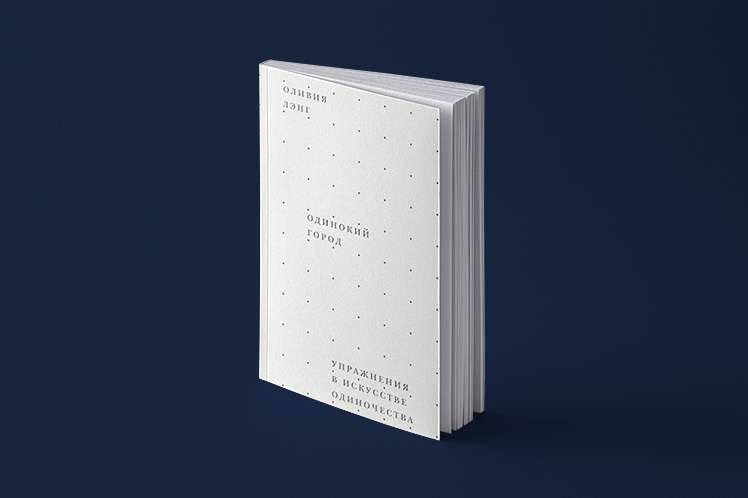
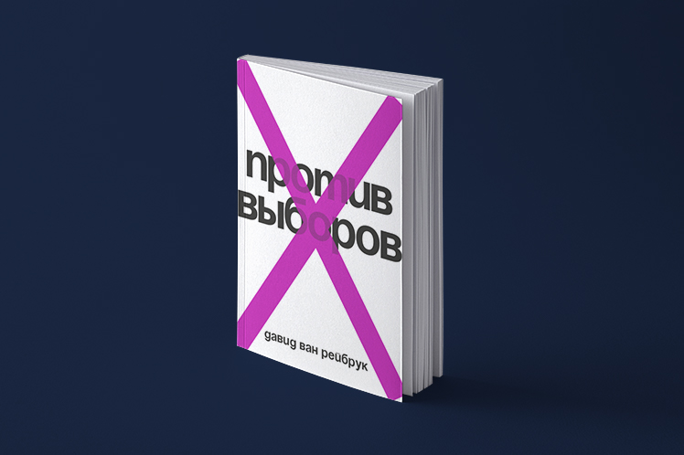

<!DOCTYPE html>
<html prefix="og: http://ogp.me/ns#">
  <head>
    <meta charset="utf-8"/>
    <meta name="viewport" content="width=device-width, initial-scale=1.0"/>
    <meta property="og:url" content="http://chernotrop.reviews/http://chernotrop.reviews/"/>
    <meta property="og:type" content="article"/>
    <meta property="og:title" content="website"/>
    <meta property="og:description" content="Чернотроп ⚒︎ Русский реализм"/>
    <meta property="og:image" content="http://chernotrop.reviews/img/http://chernotrop.reviews/-preview.jpg"/>
    <meta property="og:image:width" content="1200"/>
    <meta property="og:image:height" content="600"/>
    <link href="https://fonts.googleapis.com/icon?family=Material+Icons" rel="stylesheet"/>
    <link rel="stylesheet"/><!-- Yandex.Metrika counter --> <script type="text/javascript" > (function(m,e,t,r,i,k,a){m[i]=m[i]||function(){(m[i].a=m[i].a||[]).push(arguments)}; m[i].l=1*new Date();k=e.createElement(t),a=e.getElementsByTagName(t)[0],k.async=1,k.src=r,a.parentNode.insertBefore(k,a)}) (window, document, "script", "https://mc.yandex.ru/metrika/tag.js", "ym"); ym(56951962, "init", { clickmap:true, trackLinks:true, accurateTrackBounce:true, webvisor:true, trackHash:true }); </script> <noscript><div></div></noscript> <!-- /Yandex.Metrika counter -->
    <title>website</title>
  <link href="./css/style.bundle.css" rel="stylesheet"></head>
</html>
<body class="body_dark">
  <header class="header header_dark">
    <div class="header__logo">
      <div class="logo logo_dark"><a class="logo__link" href="/">ЧЕРНОТРОП</a></div>
    </div>
    <nav class="header__menu"><a class="menu-item" href="index.html" target="blank">главная</a><a class="menu-item" href="contacts.html">контакты</a><a class="menu-item" href="http://ttttt.me/blacktrope" target="blank">telegram-канал</a>
    </nav>
    <div class="header__menu_mobile" id="modeValue"><a href="menu.html">
        <svg xmlns="http://www.w3.org/2000/svg" width="24px" height="24px" viewBox="0 0 24 24">
          <path d="M0 0h24v24H0z" fill="none"></path>
          <path class="icon_white" d="M3 18h18v-2H3v2zm0-5h18v-2H3v2zm0-7v2h18V6H3z"></path>
        </svg></a>
    </div>
  </header>
  <div class="wrap">
    <div class="content">
      <div class="pagination"><a class="pagination__year" href="index.html">2020</a><a class="pagination__year" href="2019.html">2019</a><a class="pagination__year pagination__year_active" href="2018.html">2018</a>
      </div>
      <div class="articles-2018">
        <div class="articles-2018__row-sb"><a class="article50" href="mikhalik-comet.html">
            <div class="article50__img"></div>
            <div class="article50__content">
              <h3>Ревизия Шаламова</h3>
              <p>Филолог Елена Михайлик заново открыла нам творчество варлама Шаламова. Оказывается, он не просто хроникёр тоталитарного ада</p>
            </div></a><a class="article50" href="navalny-three-and-a-half.html">
            <div class="article50__img"></div>
            <div class="article50__content">
              <h3>Селеба за решёткой</h3>
              <p>Сказ о том, как и зачем разглядывать за брендом семьи Навальных литературный талант младшего брата</p>
            </div></a>
        </div>
        <div class="section-header"><span class="section-header__colon"></span>
          <h2>Художественная проза</h2>
        </div>
        <div class="articles-2018__row-fs"><a class="article15" href="meshchaninova-stories.html">
            <div class="article15__img"></div>
            <div class="article15__content">
              <h5>Справитесь и вы</h5>
              <p>Пронзительные рассказы Наталии Мещаниновой вселяют в людей не только ужас, но и надежду</p>
            </div></a><a class="article15" href="buksha-is-opened-inside.html">
            <div class="article15__img"></div>
            <div class="article15__content">
              <h5>Апостол юга Петербурга</h5>
              <p>О сборнике рассказов Ксении Букши «Открывается внутрь» и её удивительном умении превращать слабости в приёмы</p>
            </div></a><a class="article15" href="nosov-square.html">
            <div class="article15__img"></div>
            <div class="article15__content">
              <h5>Игнор сборника на книжной полке</h5>
              <p>Почему не заметили свежий сборник рассказов Сергея Носова</p>
            </div></a><a class="article15" href="salnikov-department.html">
            <div class="article15__img"></div>
            <div class="article15__content">
              <h5>Отдел</h5>
              <p>Первый роман Алексея Сальникова удивительным образом вышел только после второго</p>
            </div></a><a class="article15" href="senchin-tenant.html">
            <div class="article15__img"></div>
            <div class="article15__content">
              <h5>Обновление Сенчина</h5>
              <p>В новом сборнике Роман Сенчин пробует раскрыться с иной стороны, но спотыкается о собственный писательский мир</p>
            </div></a>
        </div>
        <div class="section-header"><span class="section-header__colon"></span>
          <h2>Две книги Саймона Кричли</h2>
        </div>
        <div class="articles-2018__row-fs"><a class="article50" href="critchley-dead-sophists.html">
            <div class="article50__img"></div>
            <div class="article50__content">
              <h3>Книга мёртвых философов</h3>
              <p>О труде Саймона Кричли, желающего преодолеть страх смерти</p>
            </div></a><a class="article50" href="critchley-football.html">
            <div class="article50__img"></div>
            <div class="article50__content">
              <h3>Балет рабочего класса</h3>
              <p>Об актуальном эссе Саймона Кричли, в котором философ пытается докопаться до сути популярности футбола</p>
            </div></a>
        </div>
        <div class="section-header"><span class="section-header__colon"></span>
          <h2>Смерть саморазвитию!</h2>
        </div>
        <div class="articles-2018__row-fs"><a class="article50" href="brinkman-self-help.html">
            <div class="article50__img"></div>
            <div class="article50__content">
              <h3>Право на лень и скепсис</h3>
              <p>Свен Бринкман наконец-то развенчивает миф об успешных коучах и пользе саморазвития</p>
            </div></a><a class="article50" href="pigliucchi-stoic.html">
            <div class="article50__img"></div>
            <div class="article50__content">
              <h3>Стоицизм — учение будущего?</h3>
              <p>Кажется, книга Массимо Пильюччи вскоре породит новый общественный тренд. Вместо Гоа люди поедут в Грецию</p>
            </div></a>
        </div>
        <div class="section-header"><span class="section-header__colon"></span>
          <h2>Отчуждение и политика</h2>
        </div>
        <div class="articles-2018__row-fs"><a class="article50" href="lang-lonely-city.html">
            <div class="article50__img"></div>
            <div class="article50__content">
              <h3>Одинокий город</h3>
              <p>О хорошо написанной истории общественного отчуждения</p>
            </div></a><a class="article50" href="van-reybrouck-against-elections.html">
            <div class="article50__img"></div>
            <div class="article50__content">
              <h3>Такие выборы нам не нужны</h3>
              <p>Как выглядит отличное пособие по преодолению неэффективной выборной системы</p>
            </div></a>
        </div>
      </div>
    </div>
  </div>
<script type="text/javascript" src="./js/bundle.js"></script></body>